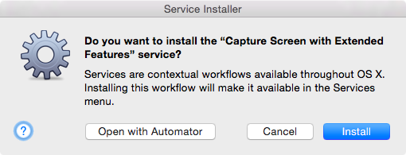
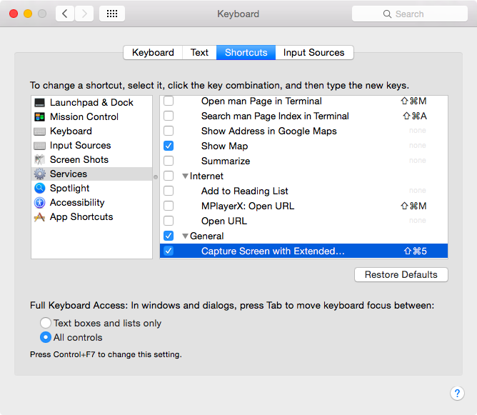
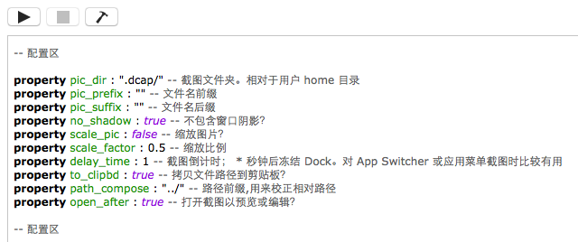
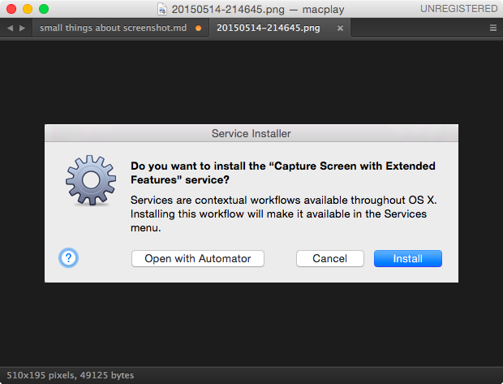

截图这件小事：使用 AppleScript 增强系统截图功能
引言
众所周知，Mac OS X 系统自带截图功能已经足够强大。默认情况下按下 ⌘ + ⇧ + 4 快捷键即可对屏幕截图，还可使用辅助键进行模式切换、锁定高宽比、输出到剪贴板 …… 等操作。然而如果你想额外进行一些简单调整，比如改变默认存储位置、修改格式等等，则会发现困难好多：需要打开终端输入 defaults write … 等类似的命令。而实际上只要你稍微简单了解下 AppleScript ，即可轻松高度定制截图设置。
具体到笔者的情况，个人并不喜欢默认的文件命名方式，希望所有的截图能单独归类到某文件夹，而不是全部散落在桌面，希望截图完毕后立刻检视是否有瑕疵，并根据需要进行加字、标记等简单操作，使用 markdown 语法插入图片时能更流畅自然些，而不必中途切出去再复制一遍截图文件名 …… 等等。于是趁空使用 AppleScript 实现了以上功能，近两天则将其配置选项独立出来，方便更多人根据需求来定制。其最终结果就是大家现在所看到的 Capture Screen with Extended Features.workflow。
有哪些增强特性？
-
自定义截图路径和文件名
-
截图是否包含窗口阴影？
-
是否缩放图片？
-
调用 Preview.app 打开截图？
-
将文件名放入剪贴板？
-
对应用菜单和 App Switcher 截图
如何安装和使用？
你可以点击 此处 下载。
双击打开，选择“安装”即可。

然后就可以使用了。默认快捷键为 ⌘ + ⇧ + 5，其使用体验与系统自带截图基本一样的。
详细设置
如果你想要更改默认设置，则依次打开 System Preferences - Keyboard - Shortcuts - Services 下的 General，在这里你可以指定其它快捷键。

右键单击选择 Open in Automator 则可使用机器人打开进一步配置。

简单说明一下：
-
property pic_dir :截图目录设置，如不存在则自动创建。支持多级路径，比如
Pictures/ahaha/hehe/screenshot/。但是注意不要包含空格或其它特殊字符，会报错。 -
property pic_prefix/suffix :文件名前/后缀，举个例子就明白了。默认文件名是这样的：
20150514-223207.png，你可以添加前后缀变成这样：macplay_20150514-223207_fordemo@2x.png。 -
property scale_pic/scale_factor :缩放截图，记得曾经有人抱怨高清屏截图贴到网上尺寸过大。你可以设置该选项缩减图片分辨率和体积。
-
property delay_time :冻结 Dock 进程以对应用菜单或 App Switcher 截图，方便有特殊需求的同学。所谓 App Switcher 就是当你按下
⌘+⇥出来的东东，具体可见 一行命令搞定 App Switcher 窗口截图 。 -
property to_clipbd :拷贝文件相对路径到剪贴板，这样使用 markdown 语法插入图片的话就非常方便。就像这样：
如果你像笔者一样使用 Sublime Text，那么在 vim 模式下按
gf即可在 ST 中查看图片。
而如果你在进行 markdown 预览，刚截取的图片也能即时在浏览器中刷新出来。
总结
在没有使用外部工具的情况下，使用该 workflow 完成了对笔者写作流程的量身定制。诚然，AppleScript 本身有不少缺点，但善加使用可使重复繁杂的工作变得简单些。希望此 workflow 能够对大家有所作用和启发，希望读者朋友们能发掘出更多更好的用法来 : )
发布/更新于：
版权声明：如无特别说明，本站文章均遵循 CC BY-NC-SA 4.0 协议，转载请注明作者及出处。